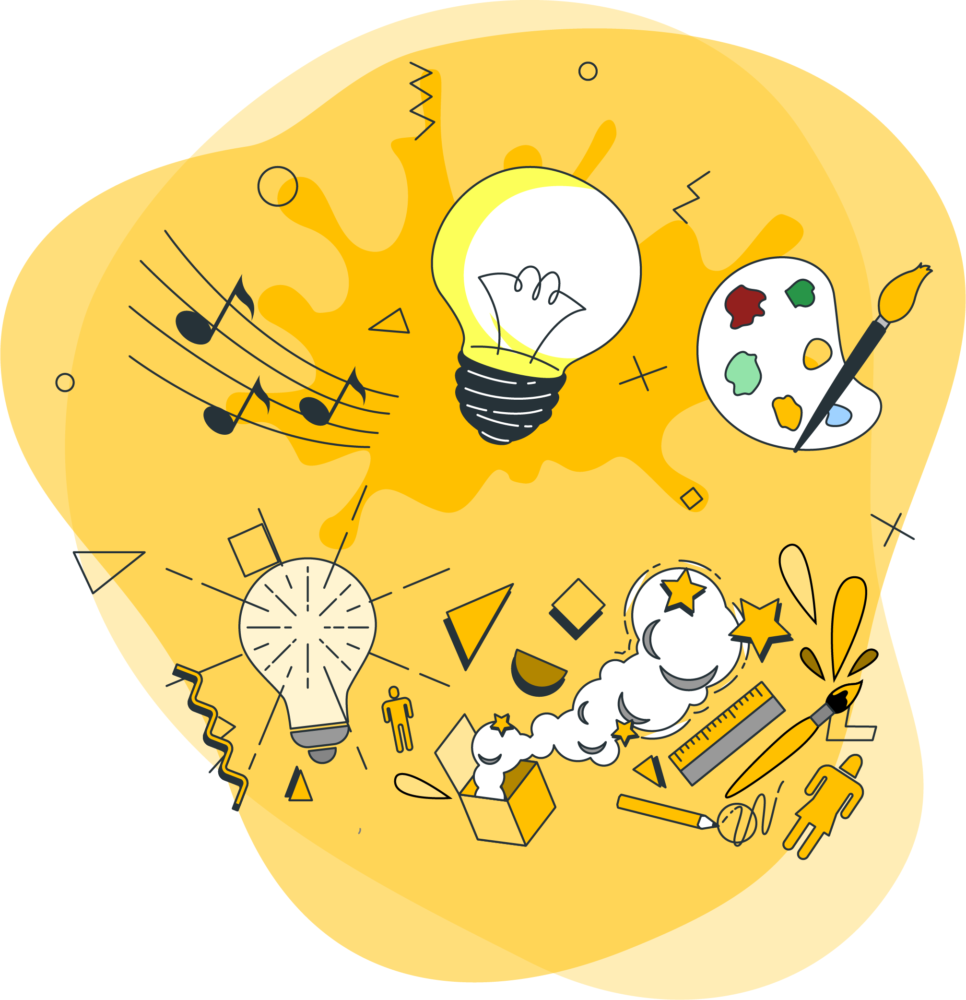
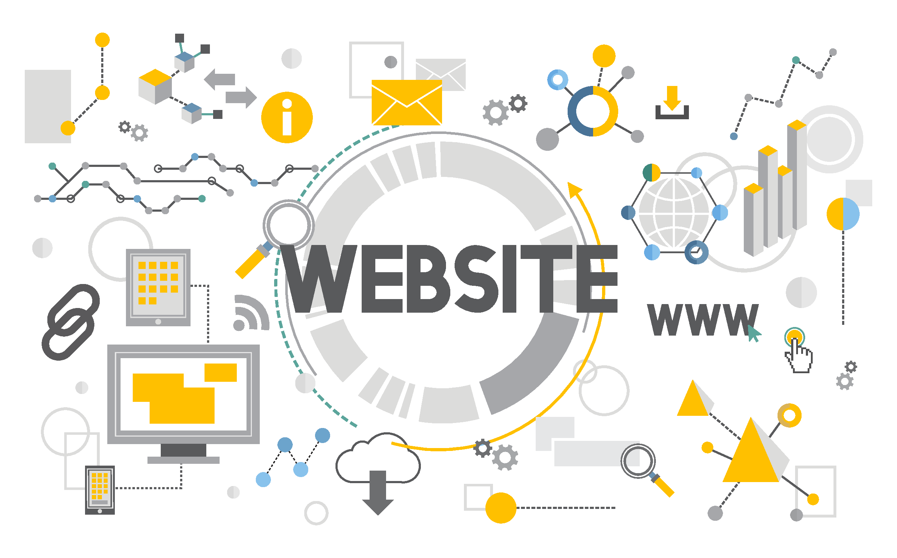
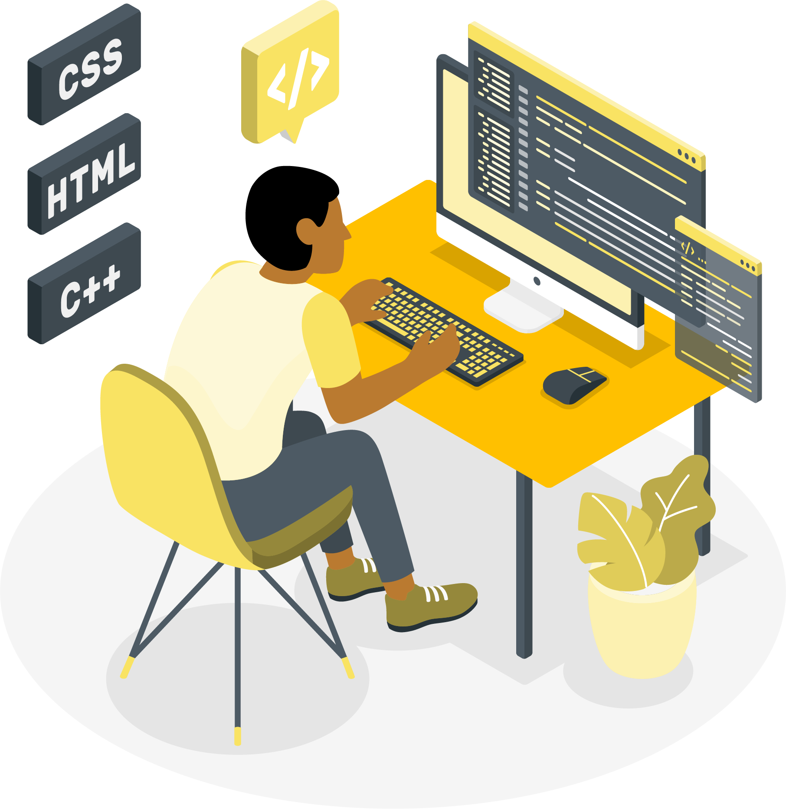

ABOUT US
Founded in 2010, we are a creative agency that produces lasting
results for our clients. We’ve partnered with many startups,
corporations, and nonprofits alike to craft designs that make real
impact. We’re always looking forward to creating brands, products,
and digital experiences that connect with our clients’ audiences.
Remi Laniyan
CSS - JAVASCRIPT - REACT - NODEJS - AWS
I am well experienced in Web architecture, RESTful API, HTTPS & HTTP
request, database relationship, clean coding, optimising web
performance, HTML5, CSS3, SASS, JavaScript, React, NodeJs. I
consistently employ collaborative methodologies to deliver
breakthrough technologies and ensure optimal performance on complex
projects and technical initiatives. I excel while meeting quality
objectives within timelines and exacting standards. I possess great
ability to tactfully lead teams and design effective methods to
critically monitor programming process while ensuring strict
regulatory compliance. I exhibit excellent analytical, leadership,
interpersonal, troubleshooting, and cross-functional skills. Key
business, economic, financial and risk management skills with good
business sense. Excellent communication skills, ability to
communicate within wide range of people clearly, concisely and with
confidence for maximum understanding of the business standards and
objectives.
Uche Omeni
HTML - CSS - JAVASCRIPT - REACT - Node.js - RESTful API interfaces
(JSON) - pug - handlebars - EJS -express
I am a analytical problem solver with strong Node.JS knowledge and a
passion for team work and innovation. As a node js developer I am
responsible for managing the interchange of data between the server
and the users. My primary focus will be the development of all
server-side logic, definition and maintenance of the central
database, and ensuring high performance and responsiveness to
requests from the front-end. I will also be responsible for
integrating the front-end elements built by my co-workers into the
application. Therefore, I have inherited basic understanding of
front-end technologie.
Pat May
HTML - CSS - JAVASCRIPT - REACT
Self-driven and motivated web designer developing and implementing
new software designs, and providing IT support and assistance to
colleagues. Coming from an artist background I have always indulged
in art, being visual, practical or musical. Therefore, as a designer
I take much pride in seeing a project, an idea come to life. Having
5 years of experience in the field in both employment and as a
freelancer, I have developed skills which enables me to provide the
best assistants which in turn delivers the best service. Very
adaptable and able to work under pressure.
WORLD CLASS TALENT
We are a crew of strategists, problem-solvers, and technologists.
Every design is thoughtfully crafted from concept to launch,
ensuring success in its given market. We are constantly updating our
skills in a myriad of platforms. Our team is multi-disciplinary and
we are not merely interested in form — content and meaning are just
as important. We give great importance to craftsmanship, service,
and prompt delivery. Clients have always been impressed with our
high-quality outcomes that encapsulates their brand’s story and
mission.
PASSIONATE
Each project starts with an in-depth brand research to ensure we
only create products that serve a purpose. We merge art, design,
and technology into exciting new solutions.

CREATIVE
Our creativity enables us to think about a task or a problem in a
new or different way, or the ability to use the imagination to
generate new ideas, which helps to solve complex problems.

RESOURCEFUL
Everything that we do has a strategic purpose. We use an agile
approach in all of our projects and value customer collaboration.
It guarantees superior results that fulfill our clients’ needs.

DEDICATED
We are loyal and devoted to the cause. Passionate about the
commitments we make and the goals we set. Giveing us the strength
do do the hard things.
THE REAL DEAL
As strategic partners in our clients’ businesses, we are ready to
take on any challenge as our own. Solving real problems require
empathy and collaboration, and we strive to bring a fresh
perspective to every opportunity. We make design and technology more
accessible and give you tools to measure success. We are visual
storytellers in appealing and captivating ways. By combining
business and marketing strategies, we inspire audiences to take
action and drive real results.